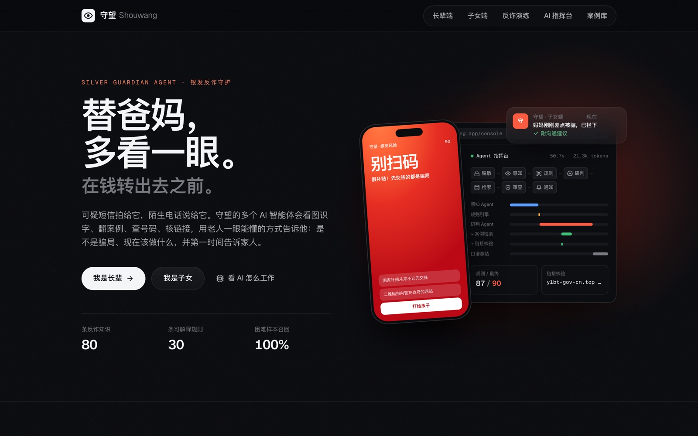

可疑短信拍给它，陌生电话说给它。守望会看图识字、翻案例、查号码、核链接，用风险仪表和一句大白话告诉老人“是不是骗子”，并在危险时第一时间告诉家人。
老年人是电信网络诈骗的重点侵害对象之一：他们往往独居、信息渠道少、对新型骗术不熟悉，又容易被“公检法”“医保局”“孙子出事”这类身份与情感压力击穿。现有防护手段有三个明显缺口：
守望是一个面向老年人的多模态反诈守护智能体。它不替代公安机关的判断，而是在“老人拿不准”的那一刻，像一位懂反诈的晚辈那样帮他看一眼：理解截图、语音和转述的内容，检索相似案例，核验号码与链接，给出一眼就懂的结论和现在该做的事；遇到高风险，悄悄告诉子女，并附上“怎么跟爸妈说”的沟通建议。
| 模块 | 功能 | 核心 AI 能力 |
|---|---|---|
| 长辈端 | 按住说话 / 拍照截图 / 粘贴短信；识破骗局时整屏变色 + 2~4 字行动指令（如“别转钱”）；骗局进度条与下一步预判；在原文上高亮可疑句并与理由编号对应；自动朗读；一键拨打 96110 或子女；三档字号 | 多模态感知、多智能体研判、RAG、Function Calling、安全护栏 |
| 子女端 | 家庭守护中心：多位家人切换、KPI 周环比、14 天风险趋势、骗局类型雷达、来源渠道、星期 × 时段热力；SSE 实时预警；AI 守护周报；每条预警附沟通建议 | 结构化报告、生成式周报与沟通建议 |
| AI 指挥台 | 一次分析两种视角：左侧老人手机画面，右侧多智能体节点图、服务端计时甘特图、规则命中、检索相似度、号码/链接核验、双通道校验、骗局阶段研判、模型与 token 用量 | 全链路可观测性 |
| 反诈演练 | AI 依据案例库剧本扮演骗子，老人在零风险环境中练习识破；AI 教练结构化复盘打分 | 受约束角色扮演、结构化评估 |
| 案例库 | 48 个典型骗局 + 32 条反诈常识；自然语言检索，展示关键词 / 语义双通道命中 | BM25 + 向量混合检索 |
| MCP Server | 4 个反诈工具 + 案例资源以 MCP 标准开放，支持 stdio 与 Streamable HTTP | Model Context Protocol |
评测在开发测试环境完成（文本/视觉模型 Claude Opus 5.5，向量模型 text-embedding-3-small），方法与局限见第 6 章。

| 角色 | 特征 | 核心诉求 |
|---|---|---|
| 长辈 60~80 岁 | 视力下降，打字困难；会用微信语音、拍照；接到“公检法”电话时紧张、羞于启齿；信任晚辈的口吻 | “这到底是不是骗子？我现在该怎么办？”——要快、要大白话、要有人兜底 |
| 子女 30~50 岁 | 在外地工作，无法时刻陪伴；担心父母被骗但不想“监视”父母；不知道怎么劝才不伤感情 | 关键时刻第一时间知道；知道怎么沟通；了解父母常遇到哪类骗局 |
| 社区 / 机构 | 社区网格员、银行适老化柜台、反诈志愿者 | 可复用的反诈能力（工具化、可接入其他 AI 系统） |
| 痛点 / 需求 | 设计对策 | 对应实现 |
|---|---|---|
| 老人打字困难 | 语音优先：按住说话、松开发送；结论自动朗读 | Web Speech API |
| 可疑内容多是图片 | 截图 / 拍照直接识别；二维码在本机解码 | VLM 感知 Agent、jsQR |
| “专业判断”老人看不懂 | 风险仪表 + 一句话结论 + 原话证据 + 编号的行动清单 | 结构化报告 + 生成式 UI |
| 担心 AI 胡说 | 思考过程可视化；引用案例编号；规则引擎双通道校验 | AgentTrace、guardReport |
| 骗子“不让告诉家人” | 高风险自动通知子女，附沟通建议 | SSE 推送、familyAdvice |
| 隐私顾虑 | 身份证、银行卡、验证码在浏览器内先脱敏；家属端只见摘要 | maskPII（端侧） |
| 宣传单向、记不住 | 沉浸式演练 + AI 教练复盘 | 反诈演练 Agent |
系统分为四层：浏览器端负责交互与端侧预处理；服务端流水线编排多个智能体；能力层是与框架无关的纯函数核心（规则、检索、核验、护栏），同时被 Web Agent 与 MCP Server 复用；模型层通过 OpenAI 兼容协议接入文本、视觉、向量三类模型。
| 层次 | 选型 | 理由 |
|---|---|---|
| 前端框架 | Next.js 15（App Router）· React 19 · TypeScript 严格模式 | 页面与 API 同仓，Route Handler 天然支持流式响应；Server Component 直接读取案例库，减少客户端数据请求 |
| 样式与动效 | Tailwind CSS v4 · OKLCH 设计令牌 · CSS 动画 | 设计令牌统一管理冷调中性色、近黑主色与红/橙/绿风险信号色；Geist + 苹方字体；动画只用 transform/opacity，尊重 prefers-reduced-motion |
| AI 交互 | Vercel AI SDK v6（streamText / tool / useChat / UI Message Stream） | 工具调用循环、类型安全的流式协议、工具结果直接驱动生成式 UI |
| 模型接入 | @ai-sdk/openai-compatible | 一套代码适配通义千问、DeepSeek、智谱、Claude 等；文本/视觉/向量可独立配置 |
| 状态管理 | useChat（会话）· Zustand + persist（偏好设置）· EventSource（预警） | 按状态来源分层：服务端流式状态、本地持久偏好、实时推送各司其职 |
| 工具协议 | @modelcontextprotocol/sdk | 反诈能力标准化开放，可被任意 MCP 客户端复用 |
| 端侧能力 | Web Speech API · Canvas · jsQR（按需加载） | 零成本语音交互；图片压缩与二维码解码不上传原图 |
| 校验与测试 | zod · node:test + tsx · Playwright | 工具入参与模型输出强校验；单元测试零额外依赖；真实浏览器 E2E |
组件按业务域组织（components/elder | family | drill | cases | common），领域类型集中在 lib/core/types.ts，前后端共享同一份 GuardianUIMessage 类型——工具名、入参、出参、自定义数据部件（data-trace / data-perception / data-rules / data-fallback）均有完整类型推断，前端渲染工具结果时编译期即可发现字段错误。
submitRiskReport 工具提交结构化报告，前端直接把工具输出渲染为风险报告卡；检索、查号、核链工具的调用过程渲染为思考时间线。| 接口 | 方法 | 说明 |
|---|---|---|
| /api/chat | POST | 多智能体分析流水线，返回 UI Message Stream |
| /api/alerts | GET / PATCH / DELETE | 预警列表 / 更新处理状态 / 重置演示数据 |
| /api/alerts/stream | GET | SSE 实时推送，20s 心跳保活 |
| /api/cases?q= | GET | 混合检索，返回结果与命中通道 |
| /api/drill · /api/drill/review | POST | 反诈演练流式对话 / 结构化复盘 |
| /api/mcp | GET / POST | MCP Streamable HTTP（无状态模式） |
| /api/digest | POST | AI 守护周报：统计近 7 天记录，由大模型生成周报与建议（带缓存与模板兜底） |
| /api/status | GET | 模型配置与向量索引状态 |
守望的 AI 不是“一次 API 调用”，而是一条由感知、规则、研判、审查组成的多智能体流水线。本章说明每个环节的选型理由、集成方式与优化策略。
| 用途 | 默认 / 测试模型 | 选型理由 |
|---|---|---|
| 文本推理 | 默认 qwen-plus；测试 Claude Opus 5.5 | 需要稳定的多步工具调用与中文口语化表达。默认选国内服务便于合规与部署；开发阶段用更强模型确定能力上限 |
| 视觉感知 | 默认 qwen-vl-max；测试 Claude Opus 5.5 | 要求逐字转写截图文字、识别画面类型与可疑细节（个人收款账户、倒计时等） |
| 语义向量 | 默认 text-embedding-v3；测试 text-embedding-3-small | 中文语义相似度；文档向量离线预计算，运行时只需对查询做一次向量化 |
三类模型通过环境变量独立配置服务商（如文本用 DeepSeek、视觉用通义千问 VL）。对于不接受 temperature 参数的新模型，通过 LLM_SUPPORTS_TEMPERATURE=false 自动省略，业务代码无需感知差异。
| 阶段 | 职责 | 设计要点 |
|---|---|---|
| 感知 Agent | 把每张图片转成结构化文字：画面类型、完整文字、发送方、号码、链接、金额、可疑细节 | 只做客观识别、不下结论，与研判解耦；多图并行；历史消息去掉图片避免重复感知 |
| 规则初筛 | 30 条可解释规则（资金、凭证、身份冒充、心理操纵、诱饵、渠道 6 类）；号码/链接实体抽取；提示词注入检测 | 软饱和计分 100·(1−e−x/60)，“资金/凭证 + 施压/冒充”组合加分；证据按分句截取 |
| 研判 Agent | 自主规划：检索案例 → 核验号码/链接 → 提交结构化报告 → 用口语对老人说结论 | Tool Loop（最多 8 步），互不依赖的工具同一轮并行调用；报告由 zod schema 约束 |
| 安全审查 | 对报告做护栏检查与修正，决定是否通知家属 | 双通道就高不就低、危险建议过滤（识别否定语义）、高风险强制兜底动作 |
| 降级兜底 | 模型未配置 / 超时 / 报错时，由规则 + 检索生成保守报告 | 前端渲染同一张报告卡，并标注“离线兜底模式” |
submitRiskReport 的入参 schema 约束，避免自由文本解析的不稳定。<untrusted_content> 中，并在系统提示中声明其中的指令一律不执行、且应视为可疑特征；包裹前会剔除伪造的闭合标签，防止逃逸。// 研判 Agent：工具循环 + 结构化报告（src/app/api/chat/route.ts，节选）
const result = streamText({
model: textModel(),
system: `${GUARDIAN_SYSTEM}\n\n${FAMILY_ADVICE_HINT}`,
messages: [...history, { role: "user", content: contextBlock }],
tools: createGuardianTools({ elderName, ruleScore: scan.score, injectionSuspicious, contentPreview }),
stopWhen: stepCountIs(8),
...sampling(0.3),
});
writer.merge(result.toUIMessageStream({ sendStart: false }));
知识构建：依据公安机关、国家反诈中心公开宣传的诈骗类型，整理 48 个典型化案例（14 类，每类 ≥ 3 例，含话术、作案过程、识别要点、防范建议、关键词）与 32 条反诈常识（官方常识、识别技巧、应急处置、老人防护、家属沟通 5 类）。
为什么混合检索：诈骗话术中的“安全账户”“验证码”等关键术语，BM25 命中精准；但骗子会换说法（“资金清查”“配合调查”），需要向量检索捕捉语义。两路结果用 RRF（Reciprocal Rank Fusion，k=60）融合，无需对两种分数归一化，稳健且可解释——界面上每条结果都标注由“关键词”还是“语义”通道命中。
pnpm rag:build 离线生成 80 条文档向量（1536 维），按 10 条一批兼容各服务商限制；运行时只向量化查询。| 工具 | 功能 |
|---|---|
| searchFraudCases | 案例/知识混合检索，返回片段、得分与命中通道 |
| checkPhoneNumber | 官方号码白名单、境外前缀、虚拟号段、仿冒 95/96 客服号、106 企业短信号、400 号 |
| checkUrl | 官方域名白名单、编辑距离仿冒、官方字样嵌入（如 yibao-gov-cn.top）、高风险后缀、IP 直连、短链、Punycode 同形字 |
| submitRiskReport | 提交结构化报告；执行时经过安全审查，并写入家属预警 |
| notifyFamily | 老人明确要求“告诉我儿子”时主动通知家属 |
MCP：检索、查号、核链、文本扫描 4 个能力同时以 MCP 标准工具开放（另提供 shouwang://cases/{id} 资源）。Web Agent 与 MCP Server 调用的是同一份 lib/core 实现，保证行为一致。MCP Server 支持本地 stdio（pnpm mcp）与远程 Streamable HTTP（/api/mcp），已通过 JSON-RPC 完成 initialize / tools/list / tools/call 联调。